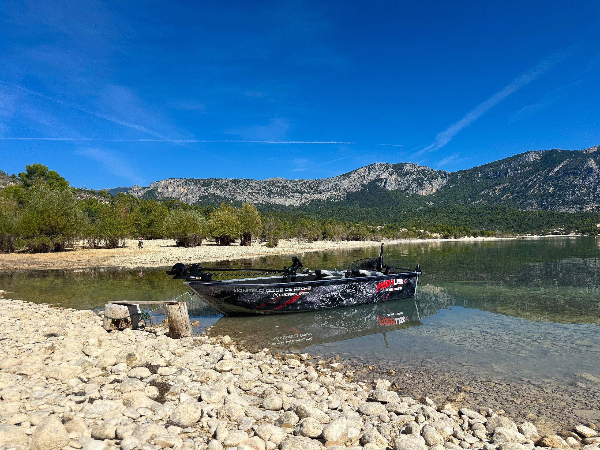
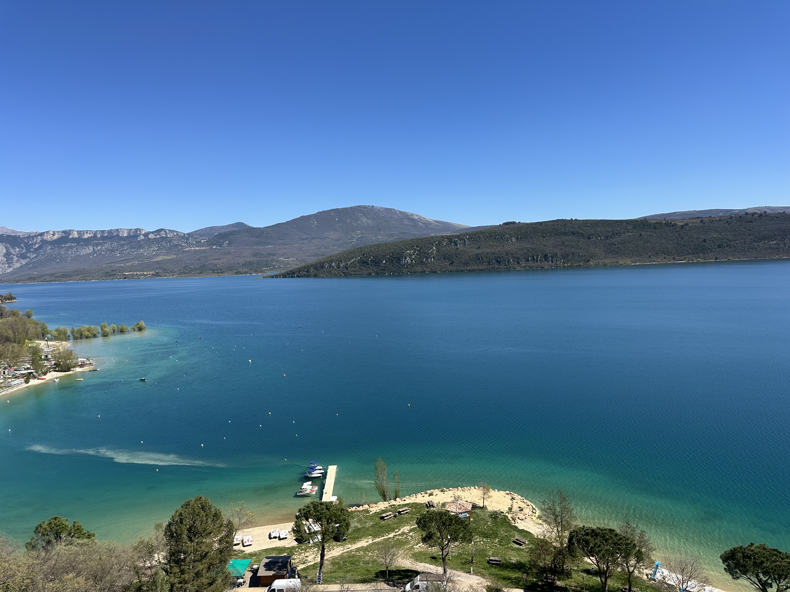
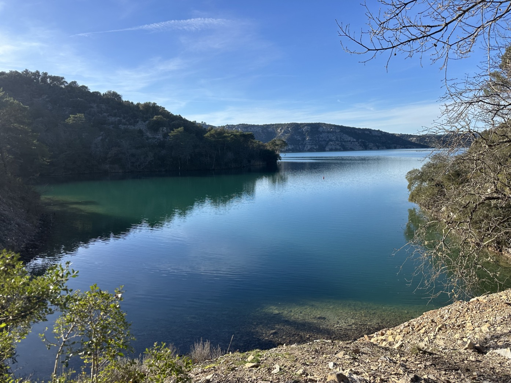
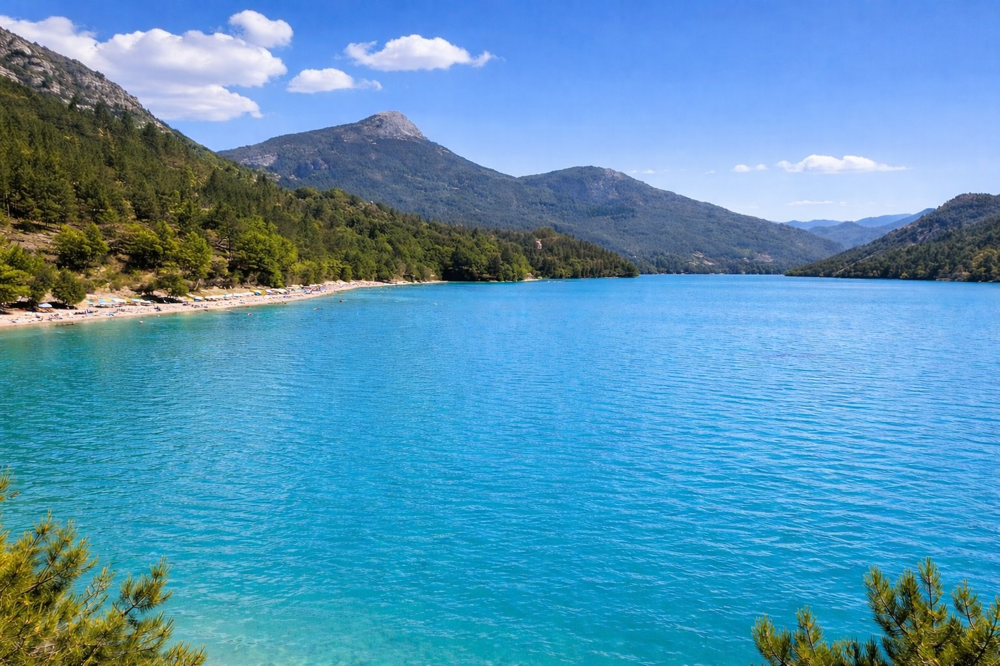
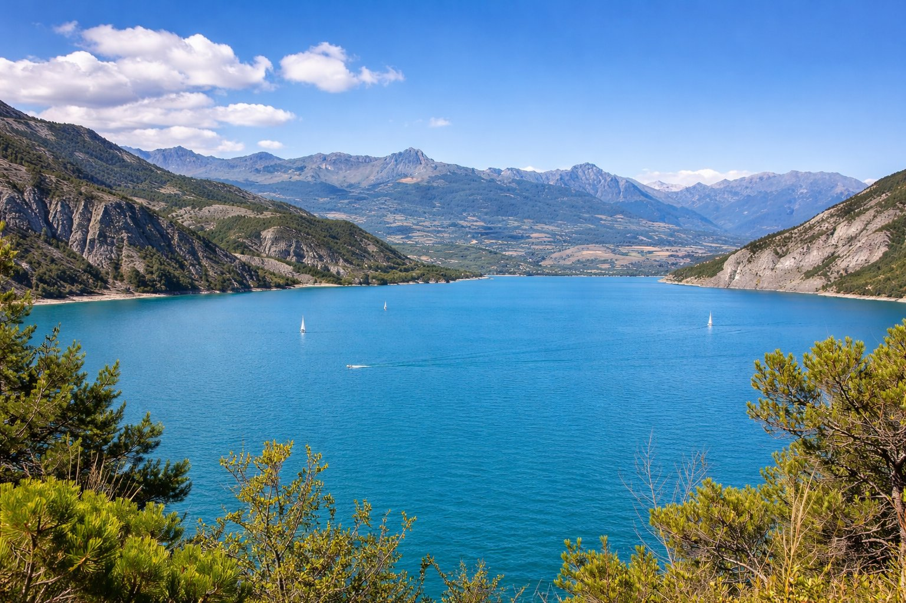

Les plus beaux lacs de la région PACA
Le Sud de la France offre une diversité de lacs impressionnante. Des eaux turquoises du Verdon aux grands espaces alpins de Serre-Ponçon, chaque lac a son caractère et ses secrets.

Le plus grand lac du Verdon avec plus de 2200 hectares de terrain de jeu. Situé au pied des gorges du Verdon, il offre un cadre de pêche exceptionnel.
Tous les carnassiers y sont présents, ce qui en fait le lieu idéal pour une pêche multi-espèces. En été, les premières heures après le lever du soleil sont souvent les plus productives.

Plus sauvage et intime que Sainte-Croix, le lac d'Esparron est un petit paradis aux eaux émeraude. Nous y traquons principalement le brochet et le black-bass.
Un lac magnifique où discrétion et approche fine font souvent la différence.

Situé plus en altitude, le lac de Castillon bénéficie d'une eau plus fraîche, idéale pour la pêche en période estivale. Ses paysages alpins et ses nombreuses structures en font un excellent lac pour rechercher le brochet, avec de réelles chances de capturer un poisson record.

Le géant des Alpes du Sud, une véritable mer intérieure entourée de montagnes. Ce lac mythique est parfait pour traquer les gros brochets en été ou les bancs de perches à l'automne.
Chaque sortie offre l'opportunité de tomber sur un poisson hors norme !
Appelez-moi, je vous conseillerai le meilleur spot selon la saison et vos envies.
Me contacter